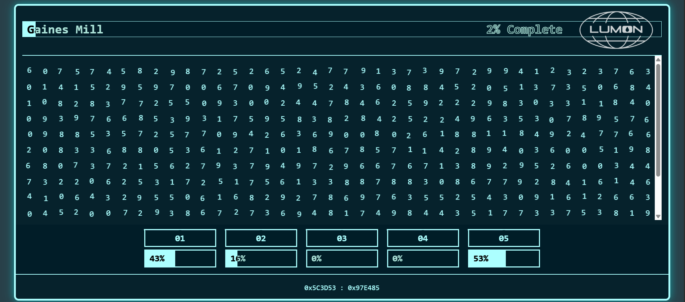

Projects

AI-Powered Fraud Detection System for Financial Transactions
Developed an end-to-end AI-powered fraud detection system for financial transactions with 99.97% accuracy.

Weather Forecasting System for Austin, TX
Developed a time-series forecasting solution using Facebook's Prophet and Python to predict local weather patterns for 2 years. Generated features from historical weather data (2015-2025).

Severance MDR Task
Welcome to Lumon! You're now Lumon employee working for Macrodata Refinement department. Good luck!

Wordle Game
A Python-based Wordle game using PyGame, featuring interactive gameplay, color-coded feedback for letter accuracy, and dynamic keyboard interface for user input.